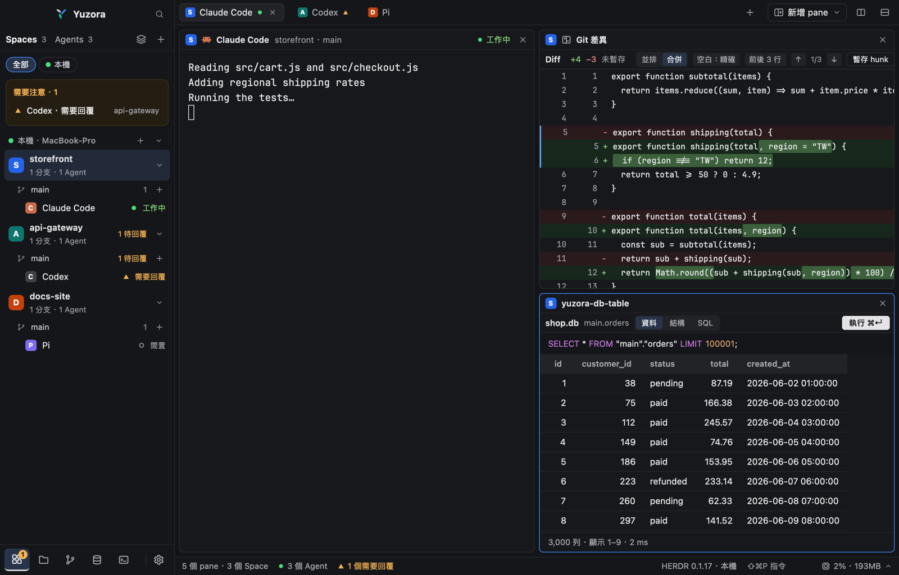
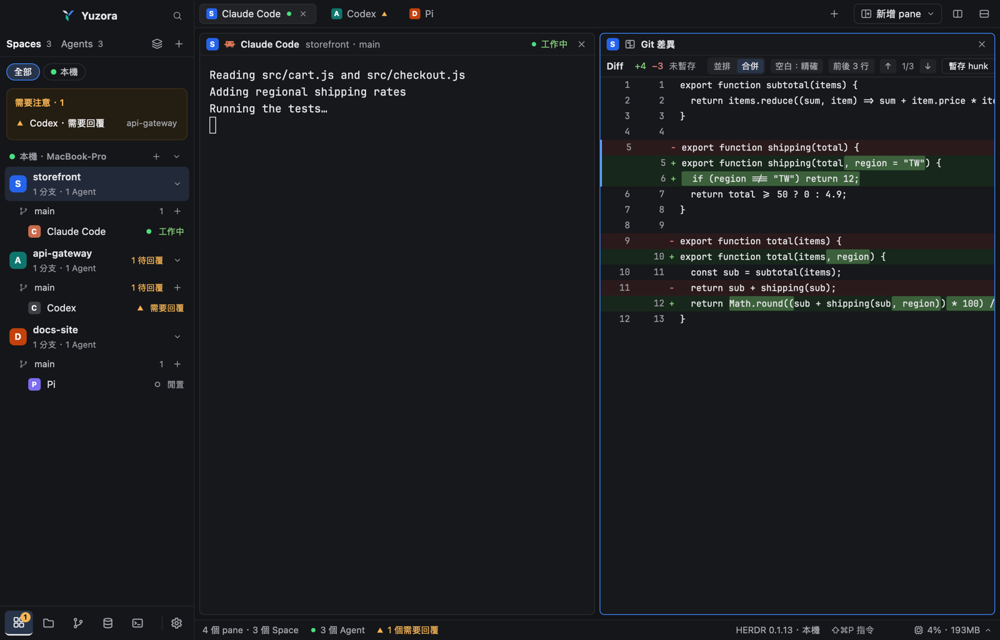
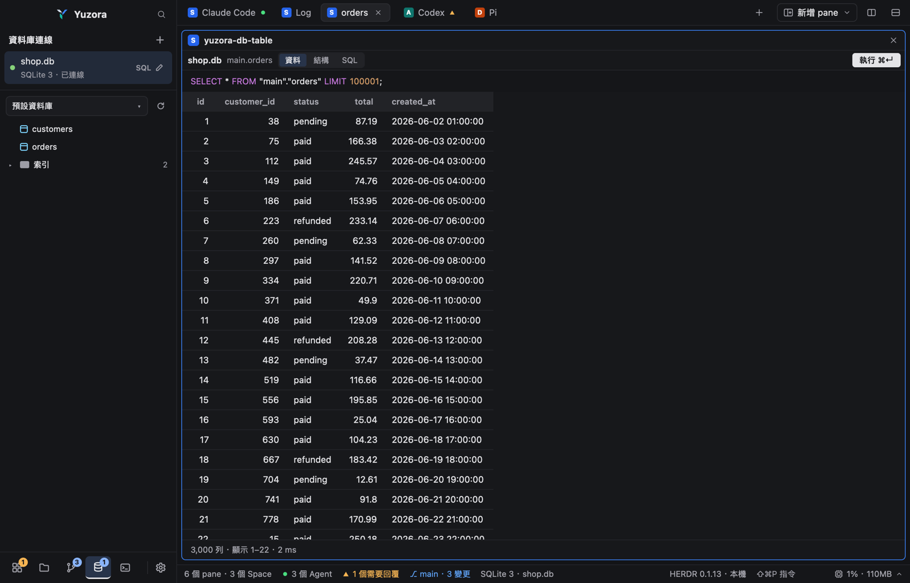
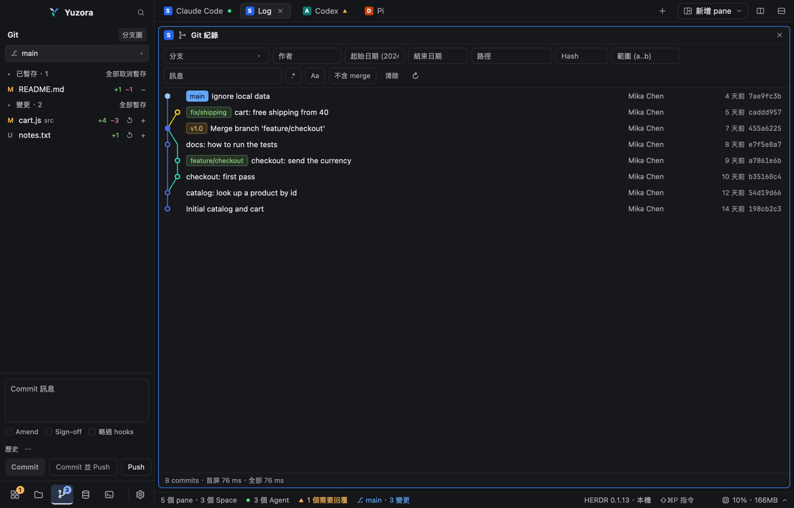

開一個 Space
選一個資料夾，在這台電腦或 SSH 連到的機器上都可以。Space 以資料夾命名，終端機從那裡開始。
開源原生 ADE · HERDR-CORE
使用 Claude Code、Codex、Pi 等 CLI coding agents。Yuzora 是以 herdr-app 打造的原生 App：agent 跑在 herdr-core 終端機，關掉視窗也會繼續；Git、檔案與編輯器、資料庫、SSH／SFTP 就在旁邊，同一個視窗裡。
已辨識：macOS · 安裝檔僅適用 Apple Silicon已辨識：Windows · x64僅支援 macOS 與 Windows 桌面裝置此裝置架構尚未提供安裝檔請從下方選擇你的平台

以開源技術打造
選一個資料夾，在這台電腦或 SSH 連到的機器上都可以。Space 以資料夾命名，終端機從那裡開始。
agent 跑在 herdr-core 的終端機；用「＋ 新增 pane」把 agent、終端機與工具放進同一個 tab。
agent 需要回覆時，側欄、tab 與 pane 邊框都會轉成琥珀色；處理完就回到主線。

側欄依機器 → Space → worktree → agent 排列，每個 agent 的狀態同時以顏色與形狀表示；需要回覆的會集中在「需要注意」。
PostgreSQL、SQL Server 與 SQLite：瀏覽 schema、看資料表與結構、執行 SQL，修改儲存格後在單一交易內寫回。

在側欄暫存與 commit，diff 可以逐塊、逐行暫存；提交紀錄與分支圖、三方合併、互動式 rebase 都在同一個工作面。

⇧⌘P 搜尋或執行命令，鍵盤不離手。往下打幾個字試試。
帶 Git 標記的檔案樹、檔名與內容搜尋、tree-sitter 上色的編輯器，以及 Markdown 預覽。
Yuzora 的介面就是 herdr mods，複製後就能改；herdr-core 的 agent 模板在設定裡編輯、啟動。
新版本從 GitHub Releases 送達；更新清單的簽章與每個檔案的 SHA-256 都驗過才安裝。
繁體中文與英文，預設跟隨系統，在設定裡切換後整個 app 立即換上。這個網頁也是。
Yuzora 負責畫面與指令；終端機、agents 與 machines 都在 herdr-core。關掉視窗，工作照跑；重開視窗，一切接得回來。
畫面與指令，關掉也不影響工作
終端機、agents 與 machines 都在這裡
側欄與工具 pane 都是 JS mods，Rust 原生層負責 Git、資料庫與 SSH 等重活
夕空下的 agent development environment
macOS 版沒有 Apple 公證：第一次開啟時，到「系統設定 › 隱私權與安全性」按「仍要打開」。
git submodule update --init app/vendor/ghostty，再到 app/ 執行 cargo build（需要 Rust 與 Zig 0.16）。
所有版本與更新紀錄